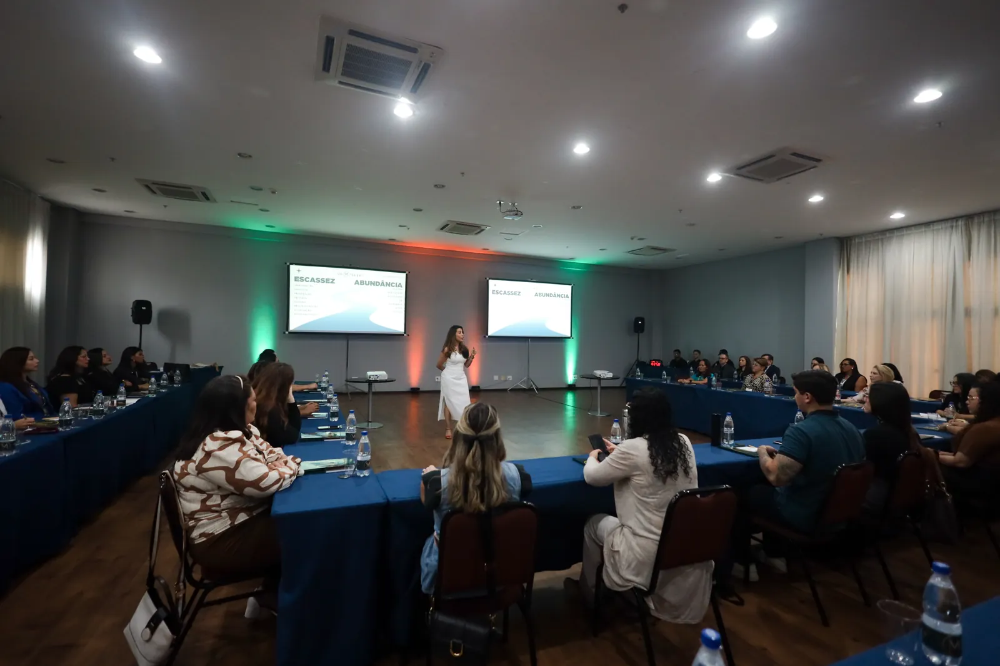

Mapeamento comportamental para empresas
Entenda como a sua
equipe pensa, decide
e se comunica
Cada pessoa recebe o próprio mapeamento com a leitura da Vivi Marques, e a sua liderança passa a conduzir o time com mais clareza e menos atrito.
 Devolutiva para cada pessoa
Devolutiva para cada pessoa
Ouça a Vivi explicar
o que muda quando
um time se conhece
Um vídeo curto sobre como o mapeamento ajuda a liderança a entender cada pessoa da equipe e a transformar as diferenças de perfil em força para o trabalho.

O que está travando
a sua equipe?
Toque nas situações que você reconhece na sua empresa. Só você vê as respostas, e nada sai desta página.
Uma linguagem comum
para todo o time
Cada pessoa da equipe responde a uma avaliação online na ferramenta CIS, em cerca de 20 minutos, e recebe um relatório personalizado com o próprio perfil comportamental, mostrando como age naturalmente e como tem se adaptado às exigências do trabalho.
A base é a metodologia DISC, que organiza o comportamento humano em quatro estilos. Quando o time conhece esses estilos, fica mais fácil entender por que um colega decide rápido enquanto outro precisa de mais informação, e as conversas passam a respeitar o jeito de cada um. Passe o cursor ou toque nas letras para ver como cada estilo contribui com a equipe.
O foco é desenvolver pessoas. O relatório mostra o estilo natural e o adaptado de cada participante e aponta caminhos de evolução, sem rótulos e sem comparação entre colegas.
Os quatro estilos na equipe
Passe o cursor ou toque em uma letra para ver como cada estilo contribui com o trabalho do time.
Cerca de 57 páginas
para cada pessoa
Cada participante recebe um relatório próprio, com tudo o que ajuda a trabalhar melhor consigo mesmo e com os colegas.
-
01
Parte 1 de 10
A intensidade do perfil DISC
Quanto de cada estilo existe na pessoa, no jeito natural e no jeito adaptado ao trabalho.
-
02
Parte 2 de 10
Positividade, estima e flexibilidade
Como cada participante enxerga a si mesmo e o quanto se ajusta quando as coisas mudam.
-
03
Parte 3 de 10
Desafios, relações e decisões
O jeito de lidar com problemas, com os colegas e com as escolhas do dia a dia.
-
04
Parte 4 de 10
Potencialidades e pontos a desenvolver
O que já é força em cada pessoa e o que merece atenção para ela crescer.
-
05
Parte 5 de 10
Tipos psicológicos
A forma de perceber o mundo e de tomar decisões, com base nos estudos de Carl G. Jung.
-
06
Parte 6 de 10
Valores e motivadores
O que realmente engaja cada pessoa, e o que faz uma meta parecer desafio para uns e peso para outros.
-
07
Parte 7 de 10
Estilo de liderança
Como cada pessoa conduz pessoas e projetos, mesmo quando não ocupa um cargo de gestão.
-
08
Parte 8 de 10
Mapa de competências
As habilidades que aparecem com mais naturalidade, úteis para distribuir funções e projetos.
-
09
Parte 9 de 10
Comunicação com outros perfis
Sugestões práticas para conversar melhor com colegas que funcionam de um jeito diferente.
-
10
Parte 10 de 10
Plano de ação
Os próximos passos para cada participante transformar o que descobriu em atitudes no trabalho.
Quando o time se conhece,
a rotina fica mais leve
Comunicação
Conversas ajustadas ao perfil de cada pessoa, com menos ruído e menos retrabalho.
Engajamento
Cada pessoa entende o que a motiva, e a liderança aprende a estimular cada uma do jeito certo.
Pessoas no lugar certo
Funções e projetos distribuídos com base nas competências naturais de cada perfil.
Liderança consciente
Líderes que conhecem o próprio estilo e sabem quando ajustar a forma de conduzir.
Indicado para empresários, líderes, RH e equipes que querem desenvolver pessoas com mais intenção, seja em uma área específica ou na empresa inteira.
Da primeira conversa até a
devolutiva de cada pessoa
Tudo acontece online, com um cronograma combinado com a sua empresa e com a agenda da Vivi.
Converse com a equipe
Você conta quantas pessoas vão participar e alinha o formato ideal para a sua empresa.
Proposta sob medidaCada pessoa responde
Os participantes recebem o link da avaliação e respondem ao questionário no próprio ritmo.
Cerca de 20 minutosRelatórios individuais
Cada participante recebe um relatório personalizado com cerca de 57 páginas.
Relatório em PDFPlano de ação
Cada relatório termina com passos práticos para o desenvolvimento de quem participou.
DesenvolvimentoDevolutiva com a Vivi
A Vivi explica os resultados e mostra como aplicar o plano no dia a dia do trabalho.
1h30 pelo Zoom
Especialista em comportamento humano
Vivi Marques
Psicopedagoga especialista em comportamento humano, a Vivi tem formação em Análise Comportamental Aplicada, Educação Inclusiva com ênfase em neurociência, Psicopedagogia Clínica e Institucional, Gestão e Orientação Educacional e Pedagogia.
Diplomata, escritora e empresária, ela é autora do livro Growth Mindset e há mais de 12 anos trabalha com desenvolvimento humano, no Brasil e fora dele. Na sua empresa, ela traduz cada relatório para a realidade de quem participou e ajuda a liderança a transformar as diferenças de perfil em força para o time.
- Pedagogia
- Psicopedagogia
- Análise Comportamental Aplicada
- Neurociência
O que muda depois do mapeamento
[DEPOIMENTO DE EMPRESA 1]
[DEPOIMENTO DE EMPRESA 2]
O investimento para desenvolver
o seu time
O valor é por participante, e a equipe da Vivi monta com você a proposta de acordo com o tamanho e o momento da sua equipe.
O que está incluso
- Avaliação online para cada pessoaQuestionário de cerca de 20 minutos, respondido no próprio ritmo.
- Relatório individualCerca de 57 páginas em PDF sobre o perfil de cada participante.
- Plano de açãoPassos práticos para o desenvolvimento de cada pessoa no trabalho.
- Devolutiva com a ViviCerca de 1h30 online, pelo Zoom, para entender e aplicar os resultados.
Mapeamento e devolutiva para cada pessoa do time
por participante, ou 12x de R$ 00,00
Solicitar propostaEmpresa em Portugal? O valor é de € 00,00 por participante, com proposta enviada pelo WhatsApp.
Dúvidas de quem lidera
pessoas
A equipe da Vivi monta a proposta de acordo com o tamanho do seu time, seja para uma área específica ou para a empresa inteira. Pelo WhatsApp você recebe as condições para o número de pessoas que vão participar.
Cerca de 20 minutos. A avaliação é online e pode ser respondida pelo celular ou pelo computador, sem tirar a pessoa da rotina por muito tempo.
Cada relatório é pessoal e confidencial. Se a empresa quiser usar os resultados na gestão do time, isso é combinado antes com a equipe da Vivi e com o conhecimento de cada participante.
Não. O relatório mostra o estilo natural e o estilo adaptado de cada pessoa, ou seja, quem ela é e como tem se ajustado ao trabalho. A proposta é desenvolver, abrir caminhos e melhorar a convivência, sem comparar colegas.
Cada participante tem uma devolutiva online com a Vivi, pelo Zoom, de cerca de 1h30. As datas são combinadas com a empresa de acordo com a agenda da equipe e a da Vivi.
A avaliação usa a metodologia DISC, tem como base os tipos psicológicos de Carl G. Jung e é aplicada por uma especialista em comportamento humano, com formação em Análise Comportamental Aplicada e neurociência.
Funciona, porque tudo acontece online. Para empresas em Portugal, o valor é de € 00,00 por participante, e a proposta é enviada pelo WhatsApp.
A proposta para empresas traz as condições de pagamento, com opções à vista por Pix ou boleto e parceladas no cartão em até 12x. O pagamento é processado com segurança pela TheBank.

Um time que se conhece
trabalha melhor junto
Converse com a equipe da Vivi, conte como é a sua empresa e receba uma proposta pensada para o momento do seu time.